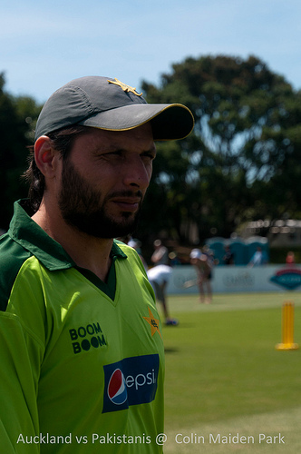
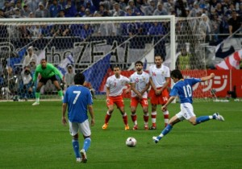

<?xml version="1.0" encoding="UTF-8"?>
<rss version="2.0"
	xmlns:content="http://purl.org/rss/1.0/modules/content/"
	xmlns:wfw="http://wellformedweb.org/CommentAPI/"
	xmlns:dc="http://purl.org/dc/elements/1.1/"
	xmlns:atom="http://www.w3.org/2005/Atom"
	xmlns:sy="http://purl.org/rss/1.0/modules/syndication/"
	xmlns:slash="http://purl.org/rss/1.0/modules/slash/"
	>

<channel>
	<title>Chronosynclastic Infundibulum &#187; sports</title>
	<atom:link href="http://www.semanticoverload.com/category/sports/feed/" rel="self" type="application/rss+xml" />
	<link>http://www.semanticoverload.com</link>
	<description>The world through my prisms</description>
	<lastBuildDate>Thu, 07 Apr 2011 17:36:17 +0000</lastBuildDate>
	<language>en-US</language>
	<sy:updatePeriod>hourly</sy:updatePeriod>
	<sy:updateFrequency>1</sy:updateFrequency>
	<generator>http://wordpress.org/?v=3.5</generator>
		<item>
		<title>More on Afridi</title>
		<link>http://www.semanticoverload.com/2011/04/05/more-on-afridi/</link>
		<comments>http://www.semanticoverload.com/2011/04/05/more-on-afridi/#comments</comments>
		<pubDate>Wed, 06 Apr 2011 03:13:41 +0000</pubDate>
		<dc:creator>Semantic Overload</dc:creator>
				<category><![CDATA[debate]]></category>
		<category><![CDATA[politics]]></category>
		<category><![CDATA[sports]]></category>
		<category><![CDATA[26/11]]></category>
		<category><![CDATA[Afridi]]></category>
		<category><![CDATA[controversy]]></category>
		<category><![CDATA[cricket]]></category>
		<category><![CDATA[gambhir]]></category>
		<category><![CDATA[gautam]]></category>
		<category><![CDATA[india]]></category>
		<category><![CDATA[pakistan]]></category>
		<category><![CDATA[terrorism]]></category>

		<guid isPermaLink="false">http://www.semanticoverload.com/?p=826</guid>
		<description><![CDATA[Looks like Afridi&#8217;s comments (similar to the ones I talked about in my previous post) are raising quite a storm in India and elsewhere, especially in the online community. He said something to the effect that Indians do not have as large a heart as Pakistanis and Muslims do. Since the proverbial fit hit the [...]]]></description>
				<content:encoded><![CDATA[<p>Looks like Afridi&#8217;s comments (similar to the ones I talked about in<a title="Afridi’s Turncoat Act" href="../../../2011/04/04/afridis-turncoat-act/index.html"> my previous post</a>) are raising quite a storm in India and elsewhere, especially in the online community. He said something to the effect that Indians do not have as large a heart as Pakistanis and Muslims do. Since the proverbial <a title="TOI article: Muslim scholar slams Afridi's line" href="http://timesofindia.indiatimes.com/city/mumbai/Muslim-scholars-slam-Afridis-line/articleshow/7879040.cms">fit hit the shan</a>, Afridi has gone into damage control mode claiming that<a title="Video: NDTV interview with Afridi" href="http://profit.ndtv.com/video/show/195596"> he was quoted out of context</a>.</p>
<div id="attachment_829" class="wp-caption alignright" style="width: 209px"><a href="../../../wp-content/uploads/2011/04/5285420332_4fc0a23931.jpg"></a><p class="wp-caption-text">Afridi. Image source: http://www.flickr.com/photos/charaka/</p></div>
<p>The fury that came out of the Indian online community either in support of or against Afridi had the usual <a title="Aman Ki Asha" href="http://www.amankiasha.com/">Aman-ki-Asha</a> defense or <a title="Wikipedia article on State Sponsored Terrorism and Pakistan" href="http://en.wikipedia.org/wiki/State-sponsored_terrorism#Pakistan">Pakistan-is-a-terror-supporter</a> attack. I will not comment on either side of the arguments except that I saw many good arguments on both sides. However, I do wish to make a point about &#8220;Pakistan is a terrorist state&#8221; versus &#8220;Pakistanis are terrorist sympathizers&#8221; argument that seems to have conveniently folded itself into the argument associated with Afridi&#8217;s statements.</p>
<p>On one side, while many agree that the political establishment in Pakistan sympathizes with and actively supports terrorist acts against India, they caution that one should not claim that the state&#8217;s support for terrorism is the same as the people&#8217;s support for terrorism much like Muage vs. Zimbabweans. On the other side, there are many who argue that a state establishment cannot function without an approval from the masses (even a tacit approval through silence is sufficient). In the latter camp, <a title="Greatbong's blogpost about Afridi's comments" href="http://greatbong.net/2011/04/05/the-big-hearts/">Greatbong argues</a> that <a title="Salmaan Taseer assassaination" href="http://en.wikipedia.org/wiki/Salmaan_Taseer#Assassin">assassination of moderates like Taseer</a> points to a popular sympathy (albeit a tacit one) for Islamic fundamentalism.</p>
<p>I agree with the sentiment that one should not equate the actions of the political establishment with the people of the state. This statement is easy to defend when talking about the people of the state, but the same arguments do not hold when you are considering individuals. The difference is the similar to how statistical inferences, while applicable to a large dataset, become irrelevant when considering the outcome of a single event. Let me explain. While the American public may not favor massive human rights violations in Iraq and may even be against the war in Iraq, you cannot claim the same to be true of some American individual. I know many Americans who actively support America&#8217;s invasion of Iraq and deposing of Saddam Hussain. I also know many Americans who oppose it.</p>
<p>The American I know who oppose the Iraq war are quick to blame their political establishment and, if pressed, are willing to offer their apologies to Iraqies and an outright admission that they oppose their goverment&#8217;s actions.</p>
<p>Let&#8217;s go back and consider Afridi&#8217;s comments specifically with respect to this argument &#8221;Pakistan is a terrorist state&#8221; versus &#8220;Pakistanis are terrorist sympathizers&#8221;. Reacting to Gautam Gambhir&#8217;s statement that India&#8217;s victory over Pakistan will help soothe the pain over 26/11 Mumbai attacks, Afridi said: &#8220;I think they were very stupid comments by Gautam Gambhir. I was not expecting this from Gautam. This is all politics, what do you know about who carried out the Mumbai attacks?&#8221; [<a href="http://www.indiatoday.intoday.in/site/Story/134319/sports/world-cup-afridi-slams-gambhir-for-2611-remark.html">source</a>]</p>
<p>Despite <a title="ISI's role in 26/11 attacks" href="http://www.lankaenews.com/English/news.php?id=10836">overwhelming</a> <a title="Headly reveals Pak role in 26/11 Mumbai attacks" href="http://ibnlive.in.com/news/david-headley-reveals-paks-role-in-2611-attacks/133350-3.html?from=tn">evidence</a> that <a title="Wikipedia article on attribution of the 26/11 Mumbai attacks" href="http://en.wikipedia.org/wiki/Attribution_of_the_2008_Mumbai_attacks">26/11 attacks received support from Pakistani establishment</a>, Afridi asserts that there is no knowledge of the perpetrators of 26/11. He could have distanced himself from the whole thing by simply saying &#8220;This is just politics.&#8221; and stopping there. But he did not. For some reason he felt compelled to defend the Pakistani establishment. That sounds like Afridi is batting for the Pakistani establishment. So I cannot give Afridi a reprieve on the &#8221;Pakistan is a terrorist state&#8221; versus &#8220;Pakistanis are terrorist sympathizers&#8221; schism.</p>
]]></content:encoded>
			<wfw:commentRss>http://www.semanticoverload.com/2011/04/05/more-on-afridi/feed/</wfw:commentRss>
		<slash:comments>3</slash:comments>
		</item>
		<item>
		<title>Afridi&#8217;s Turncoat Act</title>
		<link>http://www.semanticoverload.com/2011/04/04/afridis-turncoat-act/</link>
		<comments>http://www.semanticoverload.com/2011/04/04/afridis-turncoat-act/#comments</comments>
		<pubDate>Tue, 05 Apr 2011 00:41:50 +0000</pubDate>
		<dc:creator>Semantic Overload</dc:creator>
				<category><![CDATA[sports]]></category>
		<category><![CDATA[video]]></category>
		<category><![CDATA[Afridi]]></category>
		<category><![CDATA[cricket]]></category>
		<category><![CDATA[india]]></category>
		<category><![CDATA[interview]]></category>
		<category><![CDATA[pakistan]]></category>
		<category><![CDATA[turncoat]]></category>

		<guid isPermaLink="false">http://www.semanticoverload.com/?p=817</guid>
		<description><![CDATA[When Pakistan cricket team returned home after their semi-final loss to India, the media mobbed skipper Shahid Afridi and asked him about the loss to India. In response, Afridi got pretty aggressive and asked the media (and I am paraphrasing here) &#8220;Why are you against India? Why the hatred? Our rituals are borrowed from India; [...]]]></description>
				<content:encoded><![CDATA[<p>When Pakistan cricket team returned home after their semi-final loss to India, the media mobbed skipper Shahid Afridi and asked him about the loss to India. In response, Afridi got pretty aggressive and asked the media (and I am paraphrasing here) &#8220;Why are you against India? Why the hatred? Our rituals are borrowed from India; our culture is in large part from there; the movies we watch in our homes are Indian. So why such animosity?&#8221;<br />
Here is the video [the interview is in Urdu]:</p>
<p><span class="youtube">
<object width="425" height="355">
<param name="movie" value="http://www.youtube.com/v/tv749SCqzuU?color1=d6d6d6&amp;color2=f0f0f0&amp;border=0&amp;fs=1&amp;hl=en&amp;autoplay=0&amp;showinfo=0&amp;iv_load_policy=3&amp;showsearch=0&amp;rel=1" />
<param name="allowFullScreen" value="true" />
<embed wmode="opaque" src="http://www.youtube.com/v/tv749SCqzuU?color1=d6d6d6&amp;color2=f0f0f0&amp;border=0&amp;fs=1&amp;hl=en&amp;autoplay=0&amp;showinfo=0&amp;iv_load_policy=3&amp;showsearch=0&amp;rel=1" type="application/x-shockwave-flash" allowfullscreen="true" width="425" height="355"></embed>
<param name="wmode" value="opaque" />
</object>
</span><p><a href="http://www.youtube.com/watch?v=tv749SCqzuU">www.youtube.com/watch?v=tv749SCqzuU</a></p></p>
<p>Afridi&#8217;s response made it to Facebook and other social media sites and was appreciated by many as a mature and responsible response by a de-fact ambassador of Pakistan and cricket.<br />
The very next day, Afridi is interviewed by a reporter from Dawn news and he says this: &#8220;The media in India is very negative. One of the reasons India and Pakistan do not get along well is because of the media there. [...] I tried a lot to reach out to the Indian players, but no matter how hard we try they can never be like us.&#8221;<br />
Here is the video [the interview is in Urdu]:</p>
<p><span class="youtube">
<object width="425" height="355">
<param name="movie" value="http://www.youtube.com/v/HXh8Wk9LkqU?color1=d6d6d6&amp;color2=f0f0f0&amp;border=0&amp;fs=1&amp;hl=en&amp;autoplay=0&amp;showinfo=0&amp;iv_load_policy=3&amp;showsearch=0&amp;rel=1" />
<param name="allowFullScreen" value="true" />
<embed wmode="opaque" src="http://www.youtube.com/v/HXh8Wk9LkqU?color1=d6d6d6&amp;color2=f0f0f0&amp;border=0&amp;fs=1&amp;hl=en&amp;autoplay=0&amp;showinfo=0&amp;iv_load_policy=3&amp;showsearch=0&amp;rel=1" type="application/x-shockwave-flash" allowfullscreen="true" width="425" height="355"></embed>
<param name="wmode" value="opaque" />
</object>
</span><p><a href="http://www.youtube.com/watch?v=HXh8Wk9LkqU">www.youtube.com/watch?v=HXh8Wk9LkqU</a></p></p>
<p>So in 24 hours, Afridi goes from chastising Pakistani media for all the hyperbole and starts blaming Indian media and the Indian team for the less than cordial atmosphere between the two nation.</p>
<p>Wonder what prompted the turncoat act. Any theories?</p>
<p>P.S: Note that Afridi avoids eye contact rather conspicuously in the second video and not the first.</p>
]]></content:encoded>
			<wfw:commentRss>http://www.semanticoverload.com/2011/04/04/afridis-turncoat-act/feed/</wfw:commentRss>
		<slash:comments>0</slash:comments>
		</item>
		<item>
		<title>Should penalty shoot outs be before extra time or after?</title>
		<link>http://www.semanticoverload.com/2010/07/30/should-penalty-shoot-outs-be-before-extra-time-or-after/</link>
		<comments>http://www.semanticoverload.com/2010/07/30/should-penalty-shoot-outs-be-before-extra-time-or-after/#comments</comments>
		<pubDate>Fri, 30 Jul 2010 21:17:32 +0000</pubDate>
		<dc:creator>Semantic Overload</dc:creator>
				<category><![CDATA[economics]]></category>
		<category><![CDATA[sports]]></category>
		<category><![CDATA[football]]></category>
		<category><![CDATA[game theory]]></category>
		<category><![CDATA[penalty kick]]></category>
		<category><![CDATA[soccer]]></category>
		<category><![CDATA[sports economics]]></category>

		<guid isPermaLink="false">http://www.semanticoverload.com/?p=478</guid>
		<description><![CDATA[Given that the football world cup is over, I may have missed the window on this one, but it still is interesting! The relevant current rules in football (that&#8217;s &#8216;soccer&#8217; in Yankeeism  ) as as follows: teams play during 90 minutes. If, at the end of regular time, teams are tied (an event which, contrary [...]]]></description>
				<content:encoded><![CDATA[<div id="attachment_481" class="wp-caption alignleft" style="width: 310px"><a href="http://en.wikipedia.org/wiki/File:Shunsuke1_20080622.jpg"></a><p class="wp-caption-text">Image Source: http://en.wikipedia.org/wiki/File:Shunsuke1_20080622.jpg</p></div>
<p>Given that the football world cup is over, I may have missed the window on this one, but it still is interesting!</p>
<p>The relevant current rules in football (that&#8217;s &#8216;soccer&#8217; in Yankeeism  ) as as follows: teams play during 90 minutes. If, at the end of regular time, teams are tied (an event which, contrary to other sports, occurs with high probability), then they play an extra time. If the draw persists after the extra time, the winner is selected by penalty shoot-outs (a resolution judged “unfair” by many people).</p>
<p>Here, the incentive to perform efficiently is affected strongly by the ordering of the tasks (regular time, followed by extra time, followed by penalty shoot-out). This is illustrated in the following proposal: In the interest of making game more exciting, instead of shooting penalties after extra time (as it is currently the case), could it be preferable to shoot them before extra time and let them count only if the extra time is unsuccessful in breaking the tie?</p>
<p>The intuitive basis for such a proposal is the following: if penalties are shot before extra time, the team that wins (or loses, resp.) the penalty shoot-outs has the greatest incentives to preserve (or break, resp.) the tie and therefore plays more defensively (or offensively, resp.) than if penalties are shot after extra time. The analysis of this proposal comes down to determining whether the total level of offensive play is greater when both teams have average incentives to attack (penalties after extra time) or when one has high and one has low incentives to attack (penalties before extra time).</p>
<p>This proposal was investigated by <a title="Dr. Juan D. Carrillo" href="http://www-rcf.usc.edu/~juandc/">Dr. Juan D. Carrillo</a> from the Dept. of economics at University of Southern California. His theoretical analysis of the proposal was published in the paper &#8220;<a href="http://www-rcf.usc.edu/~juandc/PDFpapers/wp-penal.pdf">Penalty Shoot-outs: Before or After Extra Time?</a>&#8221; in the Journal of Sports Economics in 2007.</p>
<p>His analysis suggests that moving penalty shoot-out to before extra-time could potentially make for a more exciting game. However, this doesn&#8217;t really mean it will work in practice. Theoretical analysis fails to take various psychological factors into account, including but not limited to: players have a tendency to overestimate their chances of winning at penalty shoot-outs, teams might feel less psychological pressure if they lose at penalty shoot-outs (it is just a matter of bad luck), public has a taste for close games.</p>
<p>So in order to put this hypothesis to test, Liam Lenten, Jan Libich (La Trode University, Australia), and Petr Stehlik (University of West Bohemia, Czech Republic) conducted an empirical assessment <a title="Empricial Assessment of Dr. Carrillo hypothesis" href="http://www.economics.bham.ac.uk/events/Lenten_Libich_and_Stehlik__2010_.pdf">[link]</a>. They found that bringing the shoot-out before extra-time substantially alter the players&#8217; incentive in extra-time to produce more overall attacking play. In fact, the odds of extra-time scoring went up about three-fold.</p>
<p>So there might be a case for such a rule change after all!</p>
]]></content:encoded>
			<wfw:commentRss>http://www.semanticoverload.com/2010/07/30/should-penalty-shoot-outs-be-before-extra-time-or-after/feed/</wfw:commentRss>
		<slash:comments>0</slash:comments>
		</item>
		<item>
		<title>Anil Kumble retires from Test cricket</title>
		<link>http://www.semanticoverload.com/2008/11/02/anil-kumble-retires-from-test-cricket/</link>
		<comments>http://www.semanticoverload.com/2008/11/02/anil-kumble-retires-from-test-cricket/#comments</comments>
		<pubDate>Sun, 02 Nov 2008 17:39:22 +0000</pubDate>
		<dc:creator>Semantic Overload</dc:creator>
				<category><![CDATA[india]]></category>
		<category><![CDATA[sports]]></category>
		<category><![CDATA[anil]]></category>
		<category><![CDATA[anil kumble]]></category>
		<category><![CDATA[antigua]]></category>
		<category><![CDATA[jaw]]></category>
		<category><![CDATA[kumble]]></category>
		<category><![CDATA[leg spin]]></category>
		<category><![CDATA[legend]]></category>

		<guid isPermaLink="false">http://www.semanticoverload.com/?p=250</guid>
		<description><![CDATA[I woke up this working to the news of Kumble&#8217;s retirement. While it did come as a surprise, it wasn&#8217;t entirely unexpected. What surprised me was the timing, in the middle of a test series. However, one can&#8217;t help but admire everything that he has given to the game and to the team. One event [...]]]></description>
				<content:encoded><![CDATA[<p>I woke up this working to the news of <a title="Cricinfo: Kumble retires from test cricket" href="http://content-usa.cricinfo.com/india/content/current/story/376672.html">Kumble&#8217;s retirement</a>. While it did come as a surprise, it wasn&#8217;t entirely unexpected. What surprised me was the timing, in the middle of a test series. However, one can&#8217;t help but admire everything that he has given to the game and to the team. One event that stands out, for me, in Kunble&#8217;s illustrious career is the Antigua test in 2002 where he bowled with a broken jaw. Haven&#8217;t really been able to respect him less since then.</p>
<div class="wp-caption aligncenter" style="width: 360px"><p class="wp-caption-text">Kumble bowling with a fractured jaw in the fourth test match at Antigua in 2002. Pic Source: The Hindu</p></div>
]]></content:encoded>
			<wfw:commentRss>http://www.semanticoverload.com/2008/11/02/anil-kumble-retires-from-test-cricket/feed/</wfw:commentRss>
		<slash:comments>0</slash:comments>
		</item>
		<item>
		<title>Is IPL killing the cohesion in the Indian cricket team?</title>
		<link>http://www.semanticoverload.com/2008/04/25/is-ipl-killing-the-cohesion/</link>
		<comments>http://www.semanticoverload.com/2008/04/25/is-ipl-killing-the-cohesion/#comments</comments>
		<pubDate>Fri, 25 Apr 2008 23:38:25 +0000</pubDate>
		<dc:creator>Semantic Overload</dc:creator>
				<category><![CDATA[discussion]]></category>
		<category><![CDATA[india]]></category>
		<category><![CDATA[sports]]></category>
		<category><![CDATA[Bhajji]]></category>
		<category><![CDATA[dream team]]></category>
		<category><![CDATA[Harbhajan Singh]]></category>
		<category><![CDATA[IPL]]></category>
		<category><![CDATA[Sreesanth]]></category>
		<category><![CDATA[US Basketball]]></category>

		<guid isPermaLink="false">http://www.semanticoverload.com/?p=160</guid>
		<description><![CDATA[If the row between Sreesanth and Harbhajan is any indication, the Indian cricket team may end up paying a heavy price for IPL. IPL seems to threaten Indian team&#8217;s cohesion. Apparently, after the match between Mumbai Indians and Kings XI Punjab, Sreesanth who was on the winning side walked up to Harbhajan Singh &#8212; the [...]]]></description>
				<content:encoded><![CDATA[<p>If the <a title="Row between Sreesanth and Harbhajan" href="http://content-usa.cricinfo.com/ipl/content/story/347604.html">row between Sreesanth and Harbhajan</a> is any indication, the Indian cricket team may end up paying a heavy price for IPL. IPL seems to threaten Indian team&#8217;s cohesion. Apparently, after the match between Mumbai Indians and Kings XI Punjab, Sreesanth who was on the winning side walked up to Harbhajan Singh &#8212; the captain of Mumbai Indians &#8212; shook his hands, and said, &#8220;Hard luck&#8221;. Seems like that was enough to provoke Harbhajan into hitting Sreesanth under the eye. If the bad blood continues, it doesn&#8217;t take a whole lot to figure that having both of them on the Indian team may actually do more harm than good. Worse, what if we see such spats among other players as well?</p>
<p>One could argue that Harbhajan Singh has had a bad history to begin with, and is hardly an exemplary sportsperson. Also, Sreesanth&#8217;s antics on the field are soon becoming folk tales. But that doesn&#8217;t change the fact that we are going to have people like them in our cricket team. So how is the Indian cricket team going to fare under IPL constant barrage of situational conflicts?</p>
<p>Another argument is that IPL, the format, and the dynamics of teams is still nascent with IPL. Once it matures, these issues will disappear. But I am not convinced. Assuming that IPL does mature, and that IPL does discover new talent for our national cricket team, will an all-star Indian cricket team win more matched? Deccan Chargers have demonstrated that it is not always the case. A lot more goes into a successful team than an all-star roster. The key is teamwork and confidence, and that&#8217;s exactly what IPL is eroding away from the national team. And this, is not a wild leap of logic, its based on the empirical observation with the <a title="US Baketball dream team" href="http://en.wikipedia.org/wiki/Dream_Team_(basketball)">US basketball dream team</a>. Its an all-star team with the best players on paper, but still cant seem to win championships for over 5 years now. Is this going to be the chronic trend of the Indian cricket team?</p>
]]></content:encoded>
			<wfw:commentRss>http://www.semanticoverload.com/2008/04/25/is-ipl-killing-the-cohesion/feed/</wfw:commentRss>
		<slash:comments>2</slash:comments>
		</item>
		<item>
		<title>So India won the Twenty20 world cup</title>
		<link>http://www.semanticoverload.com/2007/09/25/so-india-won-the-twenty20-world-cup/</link>
		<comments>http://www.semanticoverload.com/2007/09/25/so-india-won-the-twenty20-world-cup/#comments</comments>
		<pubDate>Tue, 25 Sep 2007 17:46:32 +0000</pubDate>
		<dc:creator>Semantic Overload</dc:creator>
				<category><![CDATA[india]]></category>
		<category><![CDATA[rant]]></category>
		<category><![CDATA[sports]]></category>
		<category><![CDATA[asides]]></category>
		<category><![CDATA[conspiracy]]></category>
		<category><![CDATA[politics]]></category>
		<category><![CDATA[rants]]></category>

		<guid isPermaLink="false">http://semanticoverload.gaddarinc.com/?p=122</guid>
		<description><![CDATA[Am I the only one who suspects that India was allowed to win the cup in order to offset the massive losses that corporate India suffered after India&#8217;s early exit in the one-day world cup in West Indies?]]></description>
				<content:encoded><![CDATA[<p>Am I the only one who suspects that India was allowed to win the cup in order to offset the massive losses that corporate India suffered after India&#8217;s early exit in the one-day world cup in West Indies?</p>
]]></content:encoded>
			<wfw:commentRss>http://www.semanticoverload.com/2007/09/25/so-india-won-the-twenty20-world-cup/feed/</wfw:commentRss>
		<slash:comments>1</slash:comments>
		</item>
	</channel>
</rss>
